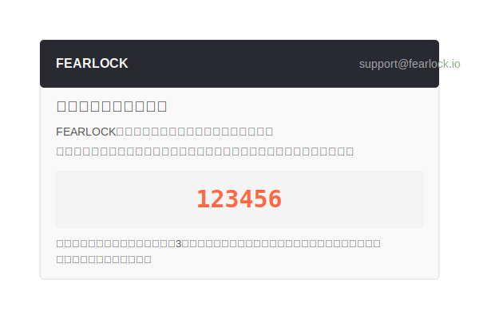

認証メールについて
認証コードの確認方法
登録時に入力したメールアドレスに認証コードが送信されます。以下の手順で確認してください：
-
メールを確認する
「FEARLOCK」からのメールを確認してください。件名は「【FEARLOCK】認証コード: XXXXXX」となっています。
 -
メール内のコードを確認
メール内に大きく表示されている6桁のコードを確認してください。このコードは自動生成された一意のコードです。
重要: コードの有効期限は発行から3分間です。期限が切れた場合は、登録画面で「コードを再送信」ボタンをクリックしてください。
-
コードを入力
FEARLOCK登録ページに戻り、表示されている「認証コードを入力」フォームに、メールで受け取った6桁のコードを入力してください。
認証コードが届かない場合
以下の対処法をお試しください：
- 迷惑メールフォルダを確認する
- 登録画面で「コードを再送信」ボタンをクリックする
- メールアドレスが正確に入力されているか確認する
- 別のメールアドレスで試す
- 数分待ってから再度試す
新しい認証メールについて
2023年7月より、セキュリティ強化のため認証方法を「マジックリンク」から「認証コード」に変更しました。
新しい認証方法では以下のメリットがあります：
- セキュリティの向上 - ワンタイムの認証コードにより、不正アクセスのリスクが低減
- モバイル対応の向上 - デバイス間の移動なしで認証が完了
- 3分間の有効期限による不正利用防止
既存アカウントへのセキュリティ通知
FEARLOCKでは、既に登録済みのメールアドレスでの再登録を防止するためのセキュリティ機能を実装しています。

以下の状況が発生した場合、セキュリティアラートが送信されます：
-
既存アカウントでの登録試行
既に登録済みのメールアドレスで新規登録が試みられた場合、認証コードは送信されません。代わりに、セキュリティ通知メールが送信され、不正アクセスの可能性について警告します。
-
セキュリティ対策
アカウントのセキュリティを確保するため、パスワードのリセットを検討してください。メール内のリンクからパスワードの変更が可能です。